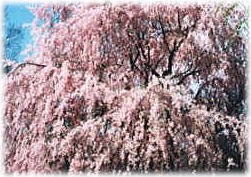

四季の移り変わりを象徴する京都の行事をご紹介します。
 春（3月〜5月）
春（3月〜5月）

- 豊太閤花見行列
- 4月第二日曜 醍醐寺
- 春の一般公開
- 4月中旬頃5日間 京都御所
- 壬生狂言
- 4月21日〜29日 壬生寺
- 葵祭
- 5月15日 下鴨／上賀茂神社
- 三船祭
- 5月第三日曜 車折神社
夏（6月〜8月）
- 貴船祭
- 6月1日 貴船神社
- 紫陽花祭
- 6月15日 藤森神社
- 祇園祭山鉾巡行
- 7月17日 八坂神社
- 万灯会
- 8月8日〜10日 六波羅蜜寺
- 五山送り火
- 8月16日 大文字山など五山
秋（9月〜11月）
- 観月の夕べ
- 仲秋の頃 大覚寺
- 時代祭
- 10月22日 平安神宮
- 鞍馬の火祭
- 10月22日 由岐神社
- 曲水の宴
- 11月3日 城南宮
- 秋の一般公開
- 11月上旬頃5日間 京都御所
- 吉例顔見世
- 12月 南座
- 終い弘法
- 12月21日 東寺
- をけら参り
- 12月31日 八坂神社
- 蹴鞠始め
- 1月4日 下鴨神社
- 初弘法
- 1月21日 東寺
冬（12月〜2月）
管理人：中原佐紀